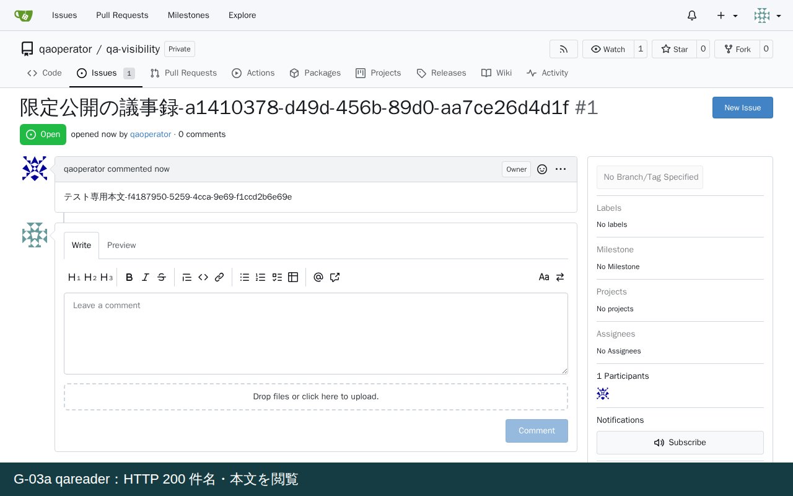

Check private issue access
A collaborator with read access and a signed-in nonmember each open the same private issue. The collaborator can read its title and description. The nonmember sees a 404 page. The test also checks access through the API.
Screenshots



Result The collaborator could read the title and body through both the page and the API. Neither response revealed them to the nonmember.
Browser recordings
Local recording · Chromium · 72da163